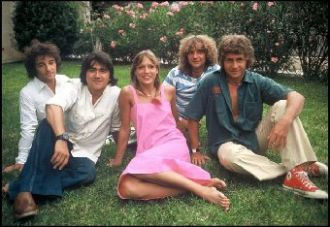
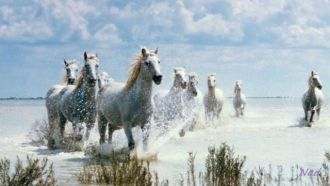
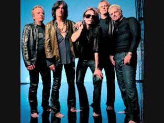
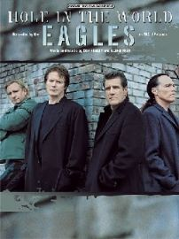
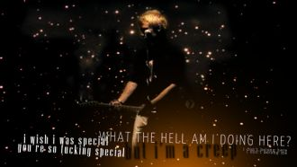

Over and over I look in your eyes You are all I desire You have captured me I want to hold you I want to be close to you
Elle a de ces lumières au fond des yeuxQui rendent aveugles ou amoureuxElle a des gestes de parfumQui rendent bête ou rendent chien

J'ai encore rêvé d'elleC'est bête, elle n'a rien fait pour çaElle n'est pas vraiment belleC'est mieux, elle est faite pour moiToute en douceur
Terre brûlée au vent Des landes de pierre, Autour des lacs, C'est pour les vivants Un peu d'enfer, Le Connemara.

Il s'appelait Stewball. C'était un cheval blanc. Il était mon idole Et moi, j'avais dix ans.
Иногда все расстояния сильнее, чем любовь.И тогда одно желание - к тебе вернуться вновь.Дождём весенним в самом белом феврале
There ain`t nothing I can do Nothing I can say That folks criticize me But I`m gonna do just as I want to anyway
A little less conversation, a little more action pleaseAll this aggravation ain't satisfactioning meA little more bite and a little less bark
What about sunriseWhat about rainWhat about all the thingsThat you said we were to gain...What about killing fieldsIs there a time
You're as cold as iceYou're willing to sacrifice our loveYou never take adviceSomeday you'll pay the price, I knowI've seen it before
I breathe clouds beneath my window I see rockets in the sky I feel satellites in limbo I breathe oxygen up high
Like a movie scene In the sweetest dreams Have pictured us together Now to feel your lips On my fingertips I have to say is even better
What on earth am I meant to do In this crowded place there is only you Was gonna leave now I have to stay You have taken my breath away
She is smiling like heaven is down on earthSun is shining so bright on herAnd all her wishes have finally come trueAnd her heart is weeping.
Give me time to realize my crimeLet me love and stealI have danced inside your eyesHow can I be real

Come here, baby
I'm sending you an SmsI'm sending you an Sms

On a dark desert highway, cool wind in my hairWarm smell of colitas, rising up through the airUp ahead in the distance, I saw a shimmering light
Oh the wind whistles down The cold dark street tonight And the people they were dancing to the music vibe

When you were here before Couldn't look you in the eye You're just like an angel Your skin makes me cry